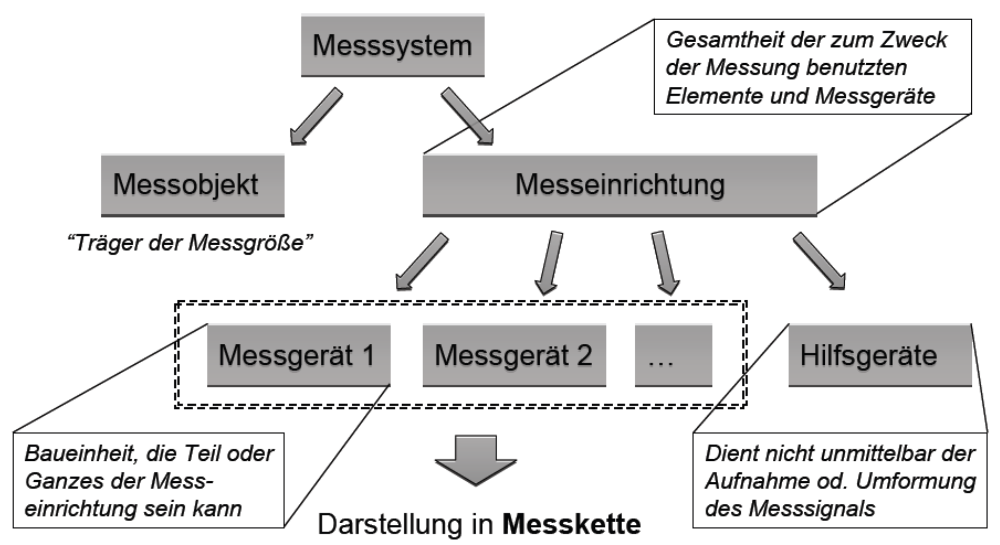
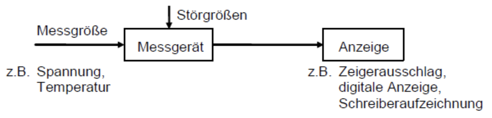
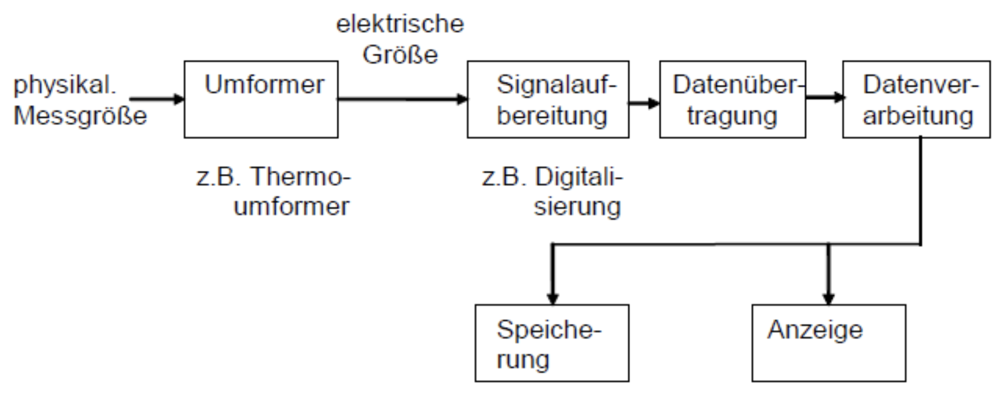

Messtechnik
Grundbegriffe
-
Messgröße
Die Messgröße ist die physikalische Größe, die durch eine Messung erfasst werden soll.
-
Anzeigebereich
Der Anzeigebereich ist der Bereich der Messwerte, der am Instrument ablesbar ist.
-
Unterdrückungsbereich
Der Unterdrückungsbereich ist der Bereich von Messwerten außerhalb des Anzeigebereichs.
-
Messbereich
Der Messbereich ist der Teil des Anzeigebereichs, für den die Spezifikationen des Gerätes gelten, häufig gleich Anzeigebereich.
-
Messprinzip
Das Messprinzip ist das Phänomen, welches der Messung zugrunde liegt.
-
Messverfahren
Das Messverfahren ist die Funktionsweise der Messeinrichtung.
-
Empfindlichkeit
Eingang oder Ausgang, analog: Zeigerweg auf Skala je Einheit der Messgröße, digital: Anzahl der Ziffernschritte je Einheit der Messgröße
-
Umkehrspanne
Die Umkehrspanne ist die Differenz beim Wechsel der Messrichtung.
-
Ansprechschwelle
Ansprechschwelle ist der erforderlicher Wert, der Änderung der Anzeige hervorruft.
-
Justieren, Abgleichen
Justieren, Abgleichen ist das Einstellen, um Fehler zu minimieren.
-
Kalibrieren
Kalibrieren ist das Feststellen eines Zusammenhangs zwischen Eingangsgröße und Ausgangsgröße.
-
Eichen
Eichen ist das Amtliche Prüfen des Messgerätes, Anpassen an Norm.
-
Messkette
Funktionselemente der Messeinrichtung, die nacheinander vom Signal durchlaufen werden
-
Messfühler
Im Messraum angeordnet, entnimmt die Messgröße und liefert diese weiter
-
Messumformer
Wandelt Signal in eine andere physikalische Größe um.
-
Sensor
kein strenger Begriff, Teil der Messkette oder auch gesamte Messkette
Messsystem
Durchführung einer Messung
Durch das Zuschalten des Messgerätes findet eine Veränderung der Messgröße statt. Dieser Effekt muss durch geeignete Geräte und Messverfahren klein gehalten werden.
Elektrische Messtechnik
Diagramm der elektrischen Messtechnik.
Auflösung
Definition
Die Auflösung ist der kleinste detektierbarer Unterschied.
Weitere Auflösungen:
-
Dynamik, -umfang
Quotient aus möglichem Maximum und Minimum des ausgegebenen Messwertes.
-
Zeitliche Auflösung
Dauer des Messvorgangs zur Bestimmung eines Messwertes entspricht nicht der „Abtastrate".
-
Räumliche Auflösung
Größe der Linie, Fläche oder des Volumens aus dem ein Messwert ermittelt wird.
-
Digitale Auflösung
Diskretisierung des Signals in $2^n$ ganzzahlige Inkremente $[bit]$.
-
Reale Auflösung
Dynamik unter Einbeziehung des Signalrauschens
Kennlinie
-
Arbeitsbereiche
Abschnitte der Kennlinie mit charackteristischem nutzbaren Verlauf sind streng monoton, linear, logarithmisch,...
-
Empfindlichkeit
Durch Änderung der Eingangsgröße hervorgerufene Änderung der Ausgangsgröße.
$$ Steigung: \frac{\Delta X_a}{\Delta X_e} $$ -
Lineraität
Maß für die Proportionalität zwischen Eingangsgröße und Ausgangsgröße.
Linearisierung von nichtlinearen Kennlinien
Hat man eine nichtlineare Kennlinie und möchte diese linearisieren so muss eine Taylorreihenentwicklung vorgenommen werden, wobei Terme höherer Ordnung vernachlässigbar sind wenn die Differenzen der zu messenden Punkte ausreichend klein sind.